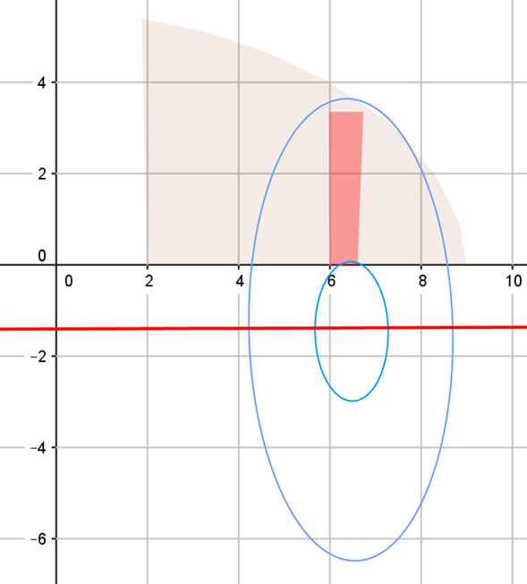
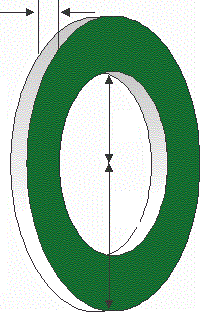
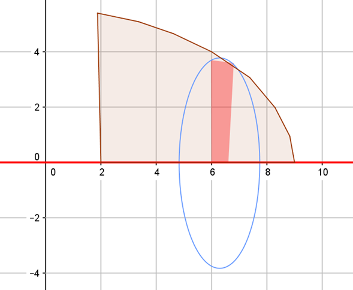
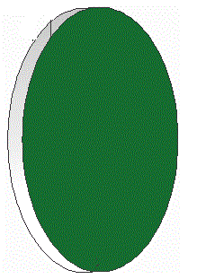
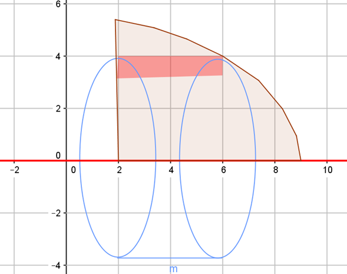
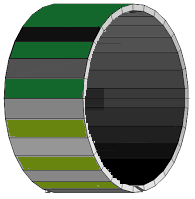

Discos, Arandelas y Cascarones cilíndricos
ARANDELAS
Se generan cuando el eje de rotación está separado de la región diferencial y son perpendiculares entre sí, existe un espacio entre la región y el eje que genera un hueco en el sólido.

DISCOS
Se generan cuando la región diferencial está directamente sobre el eje de rotación de forma perpendicular.

CASCARONES CILÍNDRICOS
Se generan cuando la región diferencial es paralela al eje de rotación.
